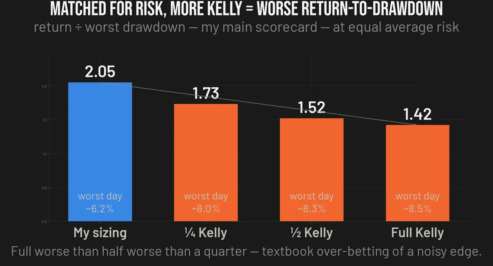
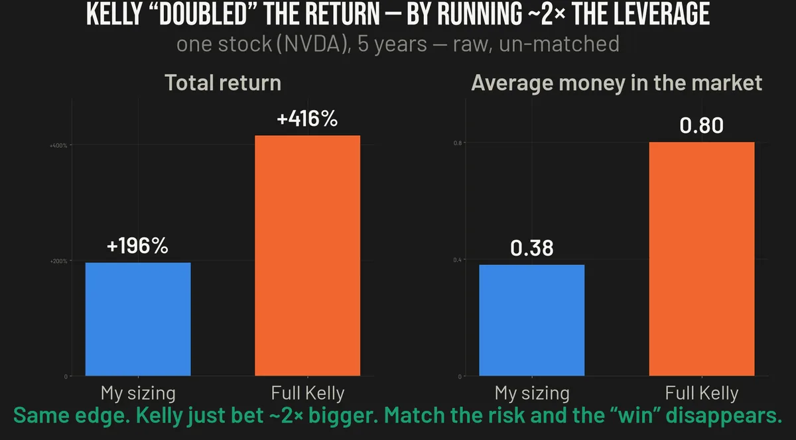

Does the Kelly Criterion Work for Position Sizing? Tested on a Trading Bot
WORSE.
The Kelly criterion replaced constant-risk sizing on a working paper-traded bot, with the signal untouched and every variant matched to the same average gross exposure. Over 5 years, constant-risk sizing posted a MAR of 2.05 and a max drawdown of -6.2%. Quarter, half and full Kelly scored MAR 1.73, 1.52 and 1.42, with the drawdown deepening to -8.5% at full strength. Kelly's one win was a smoother ride, with Sortino rising from 1.96 to 2.20 at quarter-Kelly. The unmatched 'double' (+416% vs +196%) came from running roughly 2x the average exposure.


The receipts
The code and result files behind every number on this page.
Browse the receipts for this episodeRelated autopsies
- Does the Gap and Go Strategy Work? 537 Trades TestedVerdict: DEAD.
- Is a 51% Win Rate Enough? The Renaissance Medallion Math, TestedVerdict: NOT AN EDGE.
- Does Buy at Close, Sell at Open Work? The Overnight Effect, TestedVerdict: DEAD.